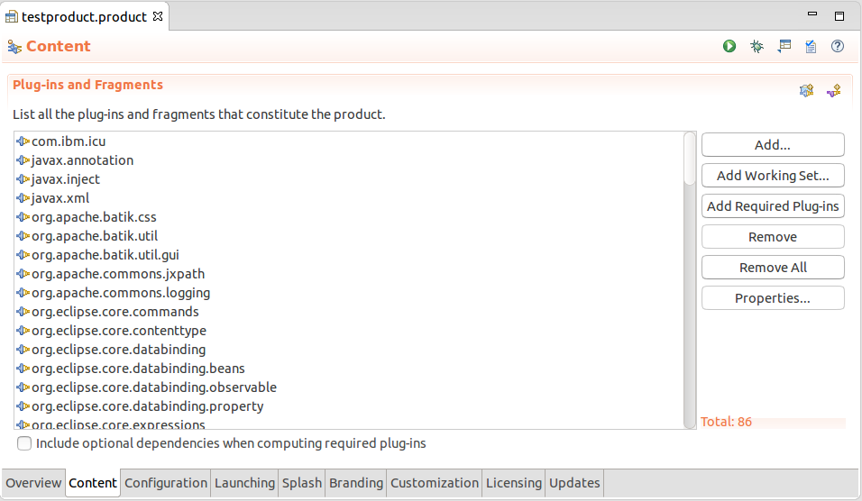

org.eclipse.jface.dialogs.MessageDialog class has now an additional vararg constructor that simplifies passing button labels.
Old:
new MessageDialog(shell, "MessageDialog", null, "DialogMessage",
MessageDialog.NONE, new String[] { "Button1", "Button2" }, 0);
New:
new MessageDialog(shell, "MessageDialog", null, "DialogMessage", MessageDialog.NONE, 0, "Button1", "Button2");
Logger#debug(Throwable) was called,
even if the application was not started in debug mode.
Now, log entries on the debug level are ignored, unless the application is started with the debug flag (-debug).
